Featured
A selection of places to explore during the trip. Tap a card for photos, TikToks and details.
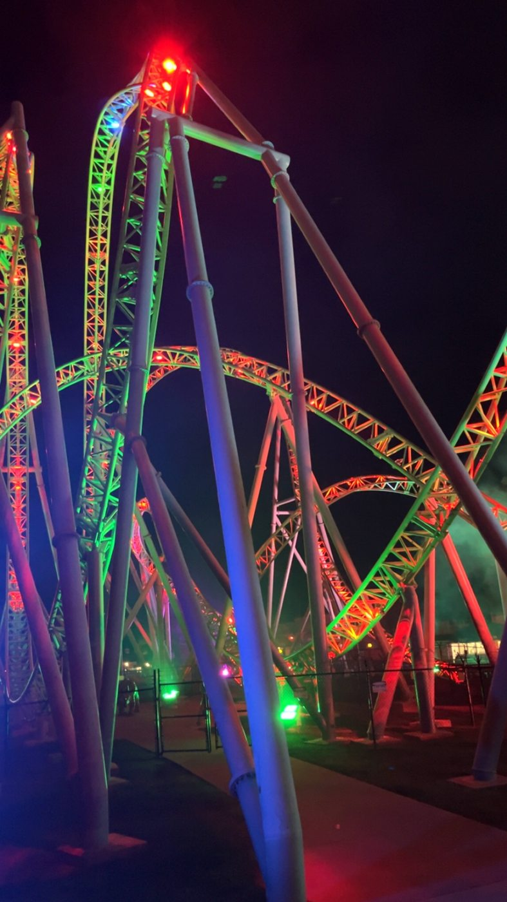
Adventureland / Phantom Fall FestAttractions · 🔁 Visited last year＋
🕒 Fri 6–10 · Sat noon–10 · Sun noon–9
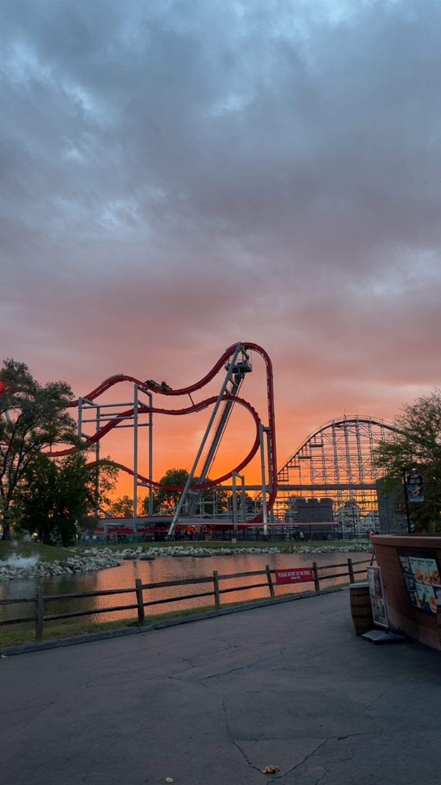
Iowa's amusement park transforms for Phantom Fall Fest, featuring roller coasters, haunted attractions, and Halloween entertainment.
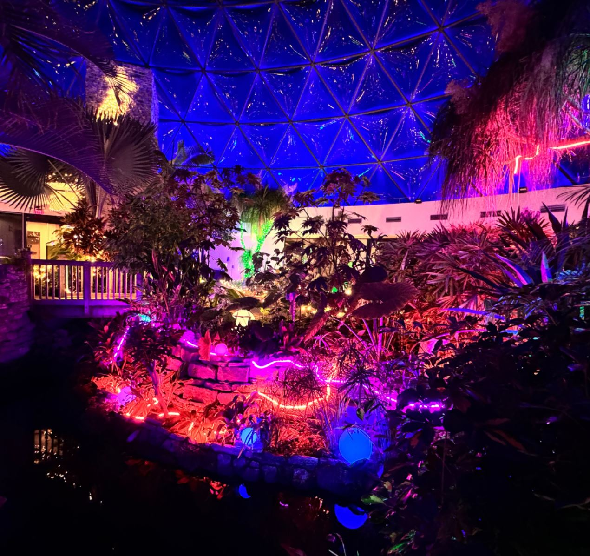
BOOtanical GardenHalloween · ✨ New idea＋
The Greater Des Moines Botanical Garden transforms after dark with illuminated displays and Halloween-inspired activities.
🕒 Listed 6–9 PM · Thu/Fri/Sun/Tue/Wed
Check event dates and tickets.
SlaughterhouseHalloween · 🔁 Visited last year＋
Hours to confirm
A terrifying haunted attraction featuring dark corridors, elaborate sets, and live actors ready to scare visitors.
Confirm 2026 event dates before visiting.
🎬 TikTok can be added later
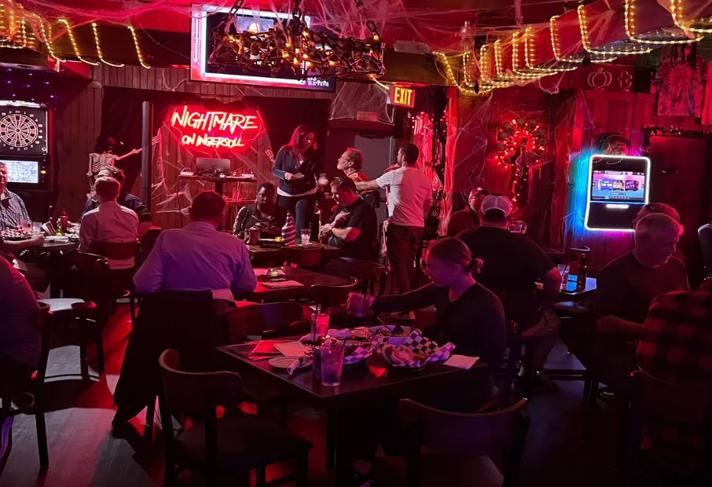
Nightmare on IngersollHalloween Bars · 🔁 Visited last year＋
🕒 Mon–Thu 4–11 · Fri–Sat 11–midnight · Sun 11–10
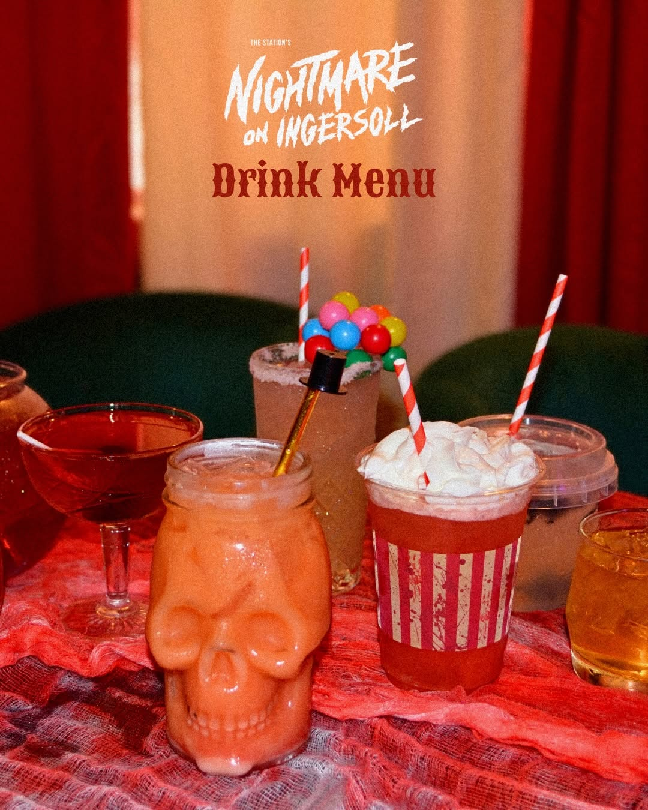
The Station on Ingersoll gets a spooky makeover with Halloween decorations, themed cocktails, and plenty of photo opportunities.
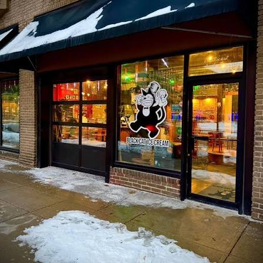
Black Cat Ice CreamFood · ✨ New idea＋
🕒 Tue–Sun 11:30–9 · Mon closed
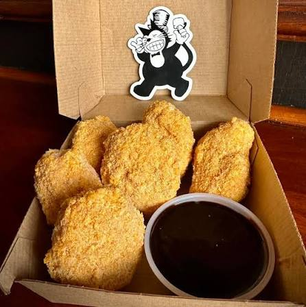
Small-batch ice cream made in Des Moines, with imaginative rotating flavors and plenty of unusual combinations to try.
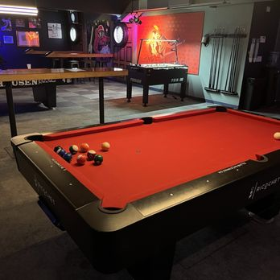
Ricochet Sports BarActivities · ✨ New idea＋
🕒 Sat–Sun 11–1:45 AM · Mon–Fri 3–1:45 AM
An energetic downtown hangout featuring ping pong, pool, and other games for a little friendly competition.
Ping pong, pool and games.
🎬 TikTok can be added later
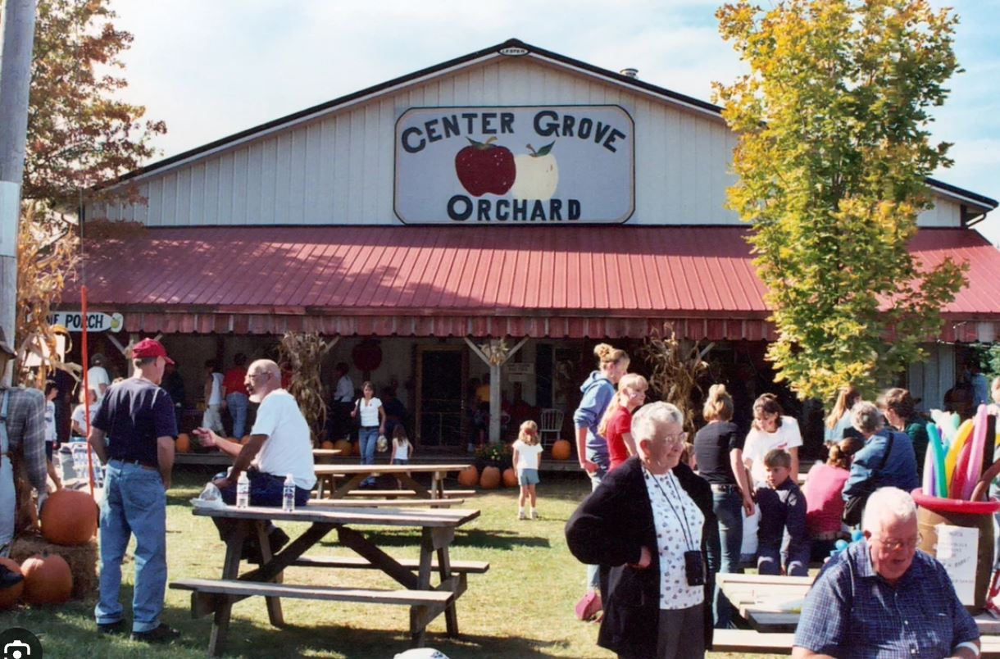
Center Grove OrchardFall Activities · ✨ New idea＋
Hours to confirm
A sprawling fall destination with pumpkin picking, apple orchards, hayrides, and seasonal activities. A classic Iowa autumn experience.
Cambridge; check late-October apple picking and fall activities.
🎬 TikTok can be added later
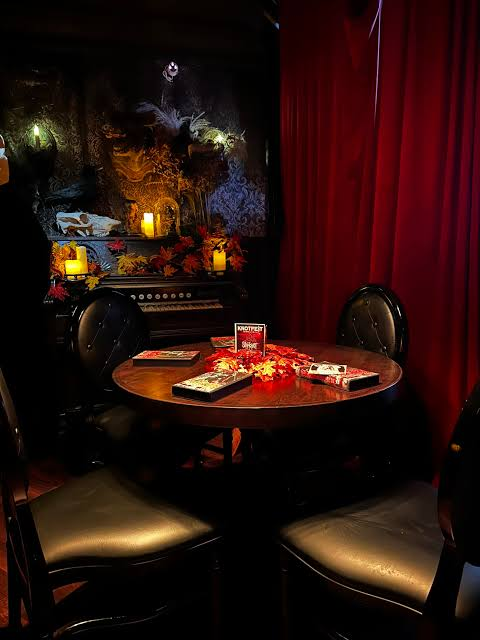
The HauntHalloween Bars · ✨ New idea＋
Hours to confirm
A Halloween-themed pop-up bar with spooky cocktails, seasonal decorations, and an atmosphere made for October nights.
Confirm open nights before planning.
🎬 TikTok can be added later
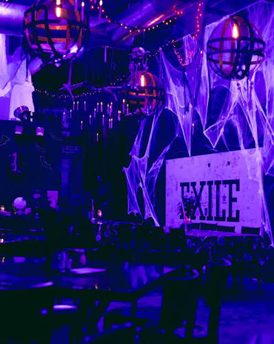
The Haunting at ExileHalloween Bars · ✨ New idea＋
Hours to confirm
Exile Brewing's seasonal Halloween experience, bringing spooky decorations and themed drinks to the brewery.
Seasonal Halloween pop-up; verify schedule.
🎬 TikTok can be added later
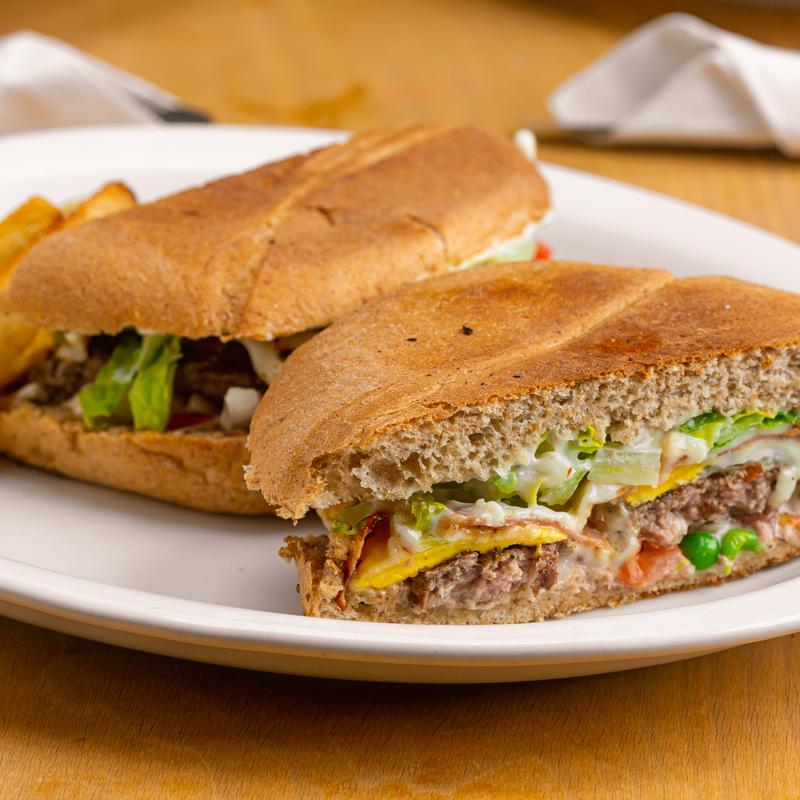
Cafe BeaudelaireFood · ✨ New idea＋
🕒 Sat–Sun 10–10 · Tue–Fri 11–10
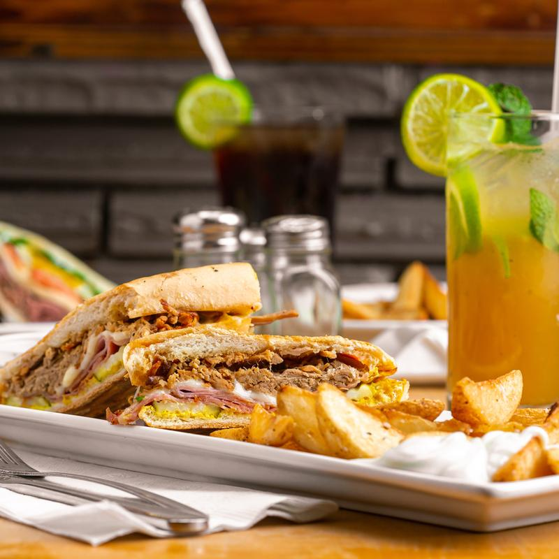
A cozy café and bar near Iowa State, known for its Brazilian-inspired food, burgers, and laid-back atmosphere.
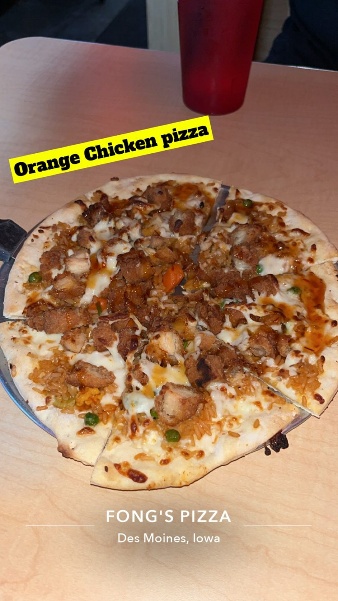
Fong’s PizzaFood · ✨ New idea＋
🕒 Sun & Sat 10–midnight · Mon–Thu 11–11 · Fri 11–midnight
A quirky pizza restaurant combining Asian-inspired flavors with classic American pizza, all inside a former Chinese restaurant.
🎬 TikTok can be added later
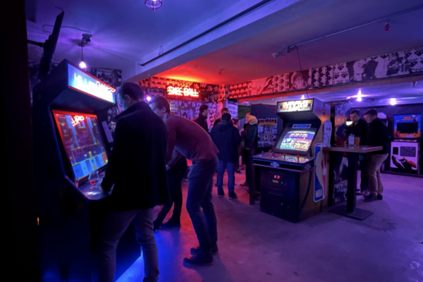
Up-DownActivities · 🔁 Visited last year＋
Hours to confirm
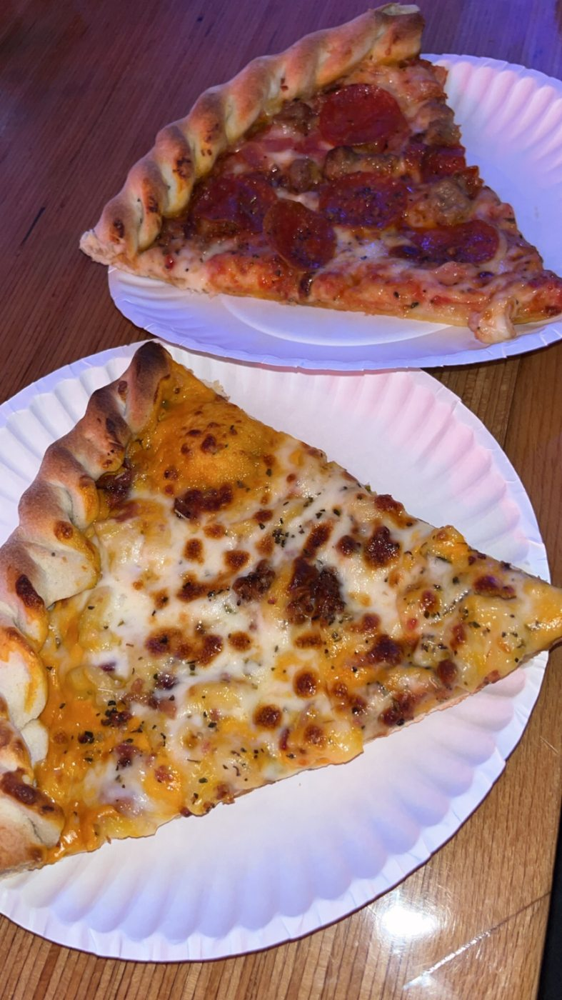
A retro arcade bar packed with classic games, pinball machines, and drinks.
🎬 TikTok can be added later
The places.
All places, grouped by location and then category. Tap a card to see videos, menus, directions and your plan.
Ames / 01
Food
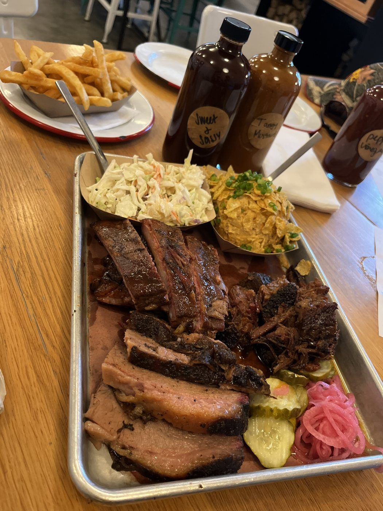
Cornbred BBQFood · 🔁 Visited last year＋
🕒 Sun 10–2 · Mon–Thu 11–8 · Fri–Sat 11–9
Award-winning barbecue served inside a restored historic train depot in Ames. Known for its brisket, smoked meats, and creative sides.
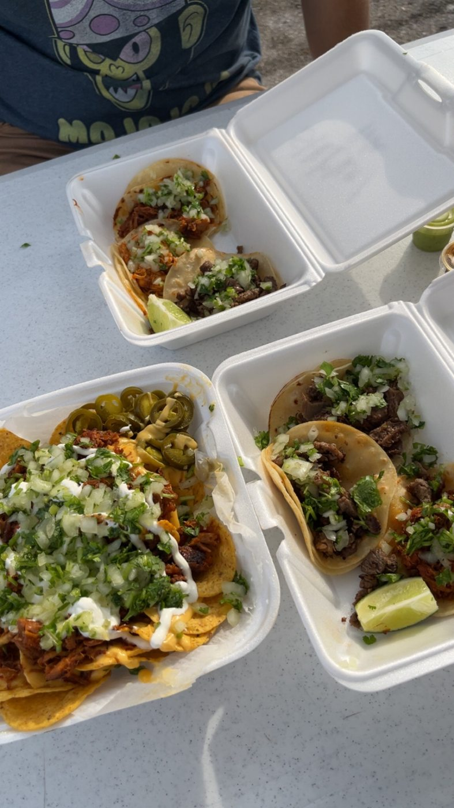
Rico’s TacosFood · 🔁 Visited last year＋
🕒 Tue–Sat 11–8
A casual Ames spot for Mexican street food, including tacos, burritos, and other favorites.
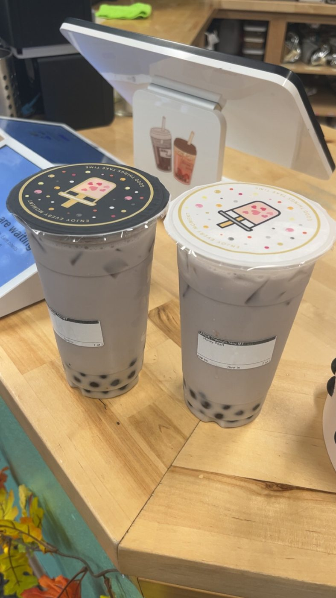
1+1 Restaurant & TeaFood · ✨ New idea＋
🕒 Mon–Sat 11–7:30
An Ames restaurant specializing in Asian comfort food and bubble tea. A great stop for a quick meal or something sweet.
Cafe BeaudelaireFood · ✨ New idea＋
🕒 Sat–Sun 10–10 · Tue–Fri 11–10
A cozy café and bar near Iowa State, known for its Brazilian-inspired food, burgers, and laid-back atmosphere.
Use a photo you own or have permission to use. Photos stay in this browser.
Attractions
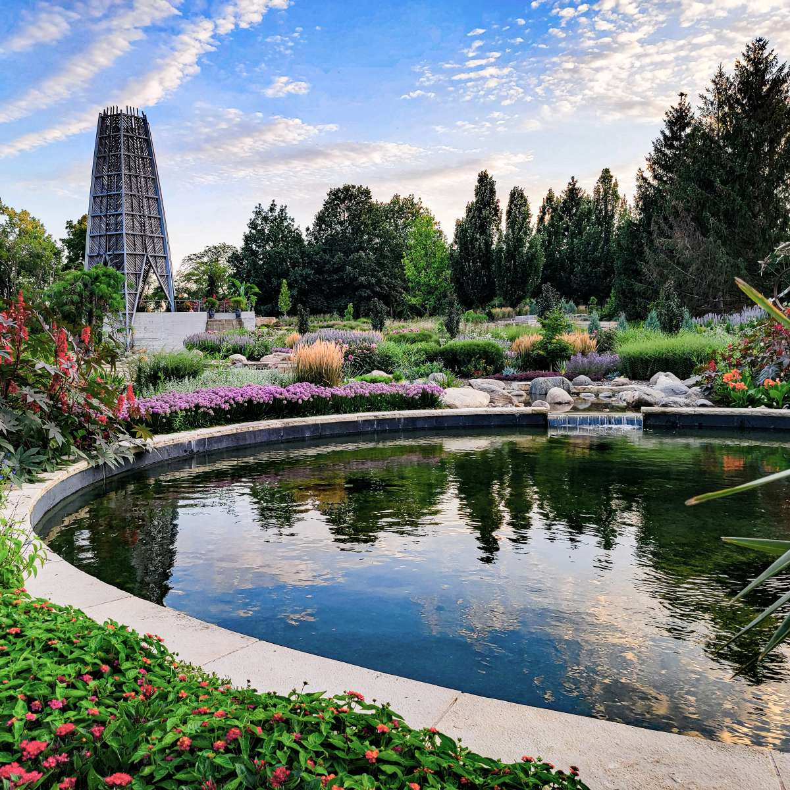
Reiman GardensAttractions · ✨ New idea＋
Hours to confirm
A beautiful botanical garden near Iowa State's campus, featuring seasonal displays, outdoor gardens, and a butterfly wing.
Optional garden stop; check October hours.
🎬 TikTok can be added later
Use a photo you own or have permission to use. Photos stay in this browser.
Shopping
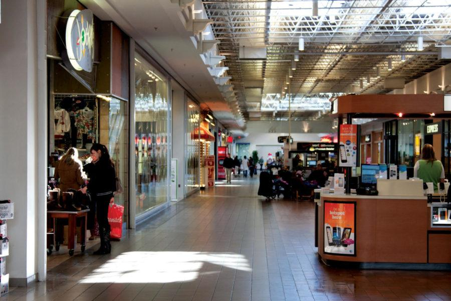
North Grand MallShopping · ✨ New idea＋
🕒 Sun 12–5 · Mon–Sat 10–9
Ames' longtime indoor shopping mall, with a mix of stores and a nostalgic, old-school mall atmosphere.
🎬 TikTok can be added later
Use a photo you own or have permission to use. Photos stay in this browser.
Downtown & East Village / 02
Food
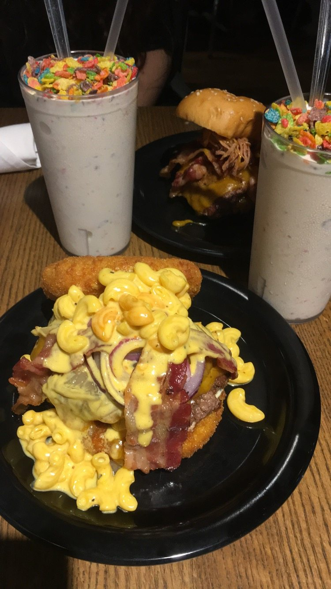
Zombie BurgerFood · 🔁 Visited last year＋
Hours to confirm
A horror-themed burger restaurant serving creatively named burgers, loaded fries, and over-the-top milkshakes.
🎬 TikTok can be added later
Fong’s PizzaFood · ✨ New idea＋
🕒 Sun & Sat 10–midnight · Mon–Thu 11–11 · Fri 11–midnight
A quirky pizza restaurant combining Asian-inspired flavors with classic American pizza, all inside a former Chinese restaurant.
🎬 TikTok can be added later
Black Cat Ice CreamFood · ✨ New idea＋
🕒 Tue–Sun 11:30–9 · Mon closed
Small-batch ice cream made in Des Moines, with imaginative rotating flavors and plenty of unusual combinations to try.
Osaka Sushi RestaurantFood · ✨ New idea＋
Hours and event dates to confirm
Sushi rolls, Japanese favorites, and a lively option for a group dinner.
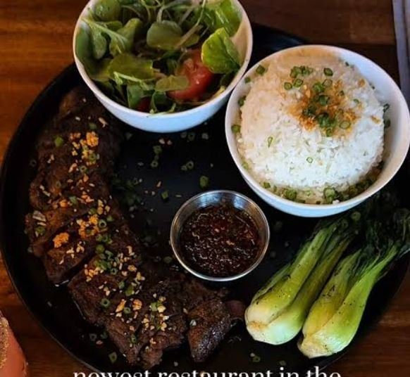
Lux Asian Restaurant & BarFood · ✨ New idea＋
Hours and event dates to confirm
An Asian restaurant and bar for a sit-down meal, with shareable dishes and a night-out atmosphere.
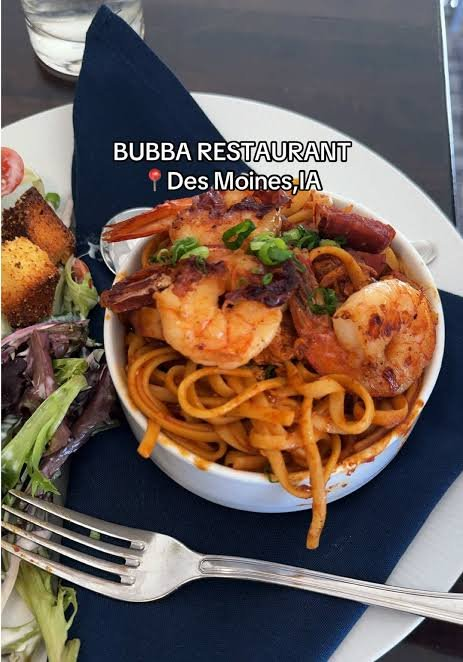
BubbaFood · ✨ New idea＋
Hours and event dates to confirm
Southern-inspired comfort food in downtown Des Moines, including rich, hearty entrées and cocktails.
Halloween Bars
The HauntHalloween Bars · ✨ New idea＋
Hours to confirm
A Halloween-themed pop-up bar with spooky cocktails, seasonal decorations, and an atmosphere made for October nights.
Confirm open nights before planning.
🎬 TikTok can be added later
Use a photo you own or have permission to use. Photos stay in this browser.
The Haunting at ExileHalloween Bars · ✨ New idea＋
Hours to confirm
Exile Brewing's seasonal Halloween experience, bringing spooky decorations and themed drinks to the brewery.
Seasonal Halloween pop-up; verify schedule.
🎬 TikTok can be added later
Use a photo you own or have permission to use. Photos stay in this browser.
Halloween
SlaughterhouseHalloween · 🔁 Visited last year＋
Hours to confirm
A terrifying haunted attraction featuring dark corridors, elaborate sets, and live actors ready to scare visitors.
Confirm 2026 event dates before visiting.
🎬 TikTok can be added later
Use a photo you own or have permission to use. Photos stay in this browser.
BOOtanical GardenHalloween · ✨ New idea＋
Photo: Wikimedia Commons, CC BY-SA 3.0. Source and license
The Greater Des Moines Botanical Garden transforms after dark with illuminated displays and Halloween-inspired activities.
🕒 Listed 6–9 PM · Thu/Fri/Sun/Tue/Wed
Check event dates and tickets.
Use a photo you own or have permission to use. Photos stay in this browser.
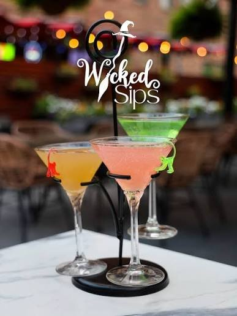
Wicked HeightsHalloween · ✨ New idea＋
Hours and event dates to confirm
A Halloween-themed cocktail pop-up with playful spooky drinks and seasonal décor. Check this year’s dates.
Bomb Bar — Slasher Volume IIIHalloween · ✨ New idea＋
Hours and event dates to confirm
A horror-movie-inspired seasonal cocktail experience at Bomb Bar. Check whether Slasher Volume III is running during the trip.
Activities
Up-DownActivities · 🔁 Visited last year＋
Hours to confirm
A retro arcade bar packed with classic games, pinball machines, and drinks.
🎬 TikTok can be added later
Ricochet Sports BarActivities · ✨ New idea＋
🕒 Sat–Sun 11–1:45 AM · Mon–Fri 3–1:45 AM
An energetic downtown hangout featuring ping pong, pool, and other games for a little friendly competition.
Ping pong, pool and games.
🎬 TikTok can be added later
Use a photo you own or have permission to use. Photos stay in this browser.
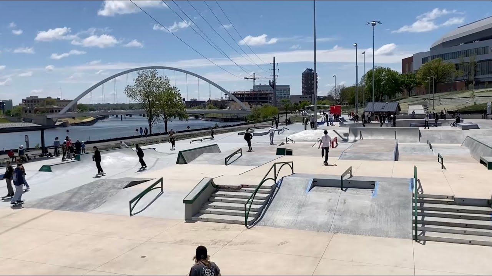
Lauridsen SkateparkActivities · ✨ New idea＋
Hours to confirm
One of the largest open skateparks in the country, located along the Des Moines River with views of downtown.
Outdoor skatepark; good sightseeing stop.
🎬 TikTok can be added later
Use a photo you own or have permission to use. Photos stay in this browser.
Downtown Farmers’ MarketActivities · ✨ New idea＋
🕒 Sat 8–noon (your notes; verify)
A bustling Saturday market filled with local produce, baked goods, prepared foods, and Iowa-made products.
🎬 TikTok can be added later
Use a photo you own or have permission to use. Photos stay in this browser.
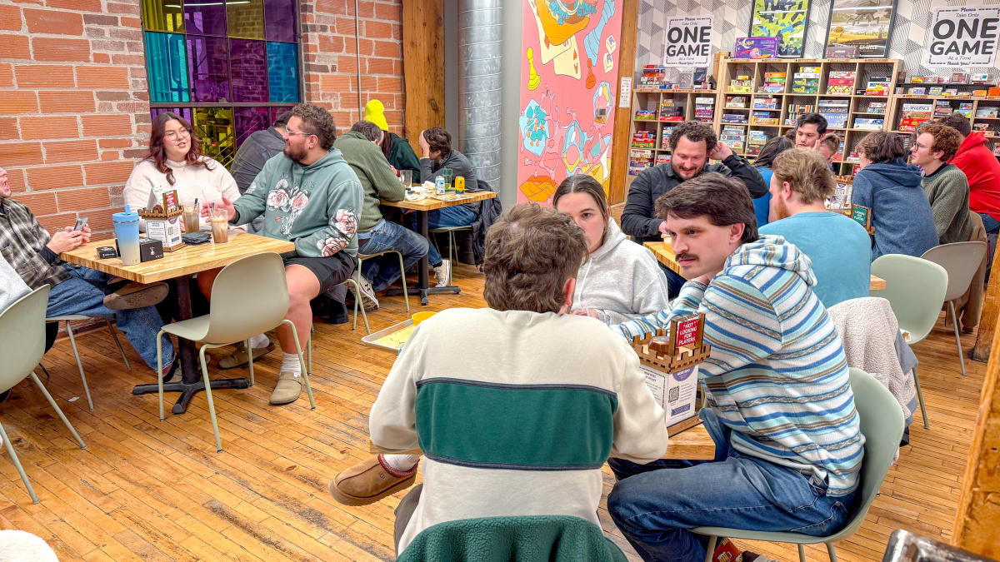
The Rook RoomActivities · ✨ New idea＋
🕒 Mon–Thu 4–10 · Fri–Sun 8–10
A board-game café and lounge with a huge library of games, plus coffee, cocktails, and food. A great place to spend an evening playing together.
Ingersoll & West Side / 03
Food
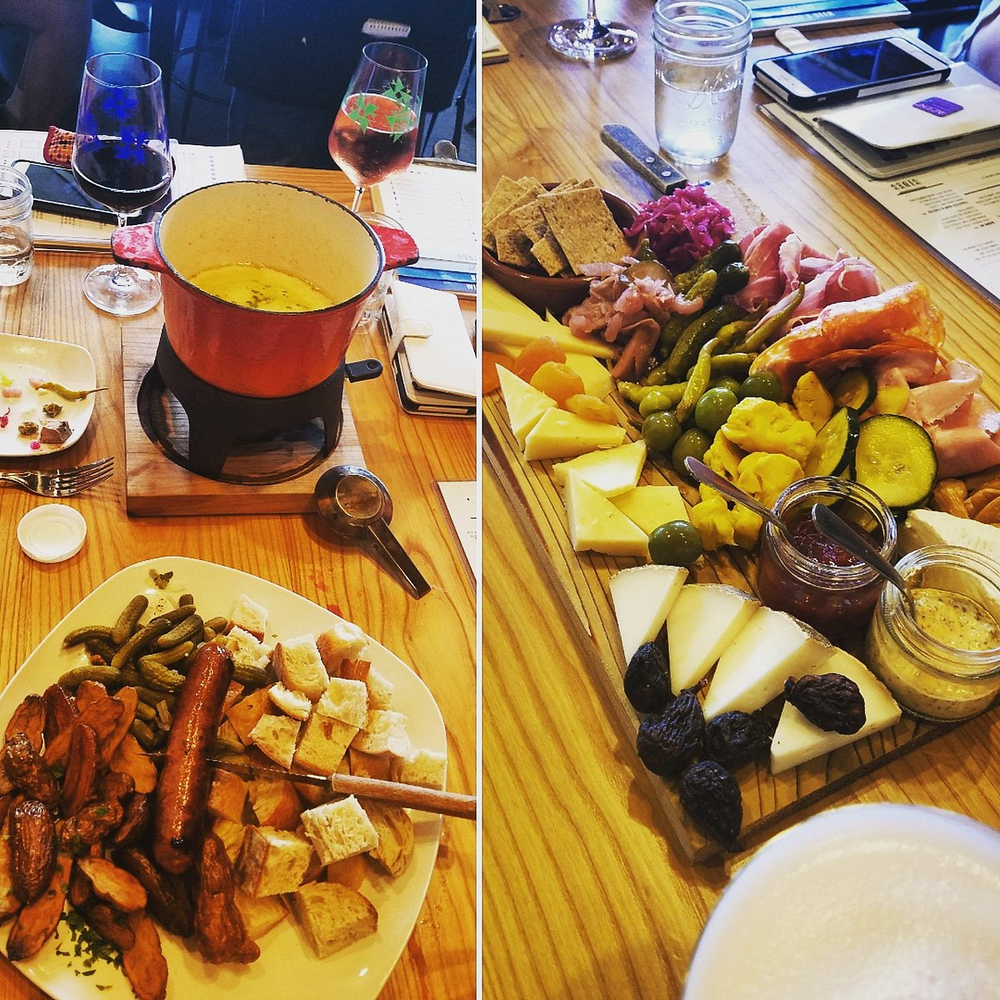
Cheese BarFood · ✨ New idea＋
🕒 Tue–Sat 11–9
A cozy restaurant dedicated to all things cheese, featuring gourmet grilled cheese sandwiches, mac and cheese, and other comfort-food favorites.
Use a photo you own or have permission to use. Photos stay in this browser.
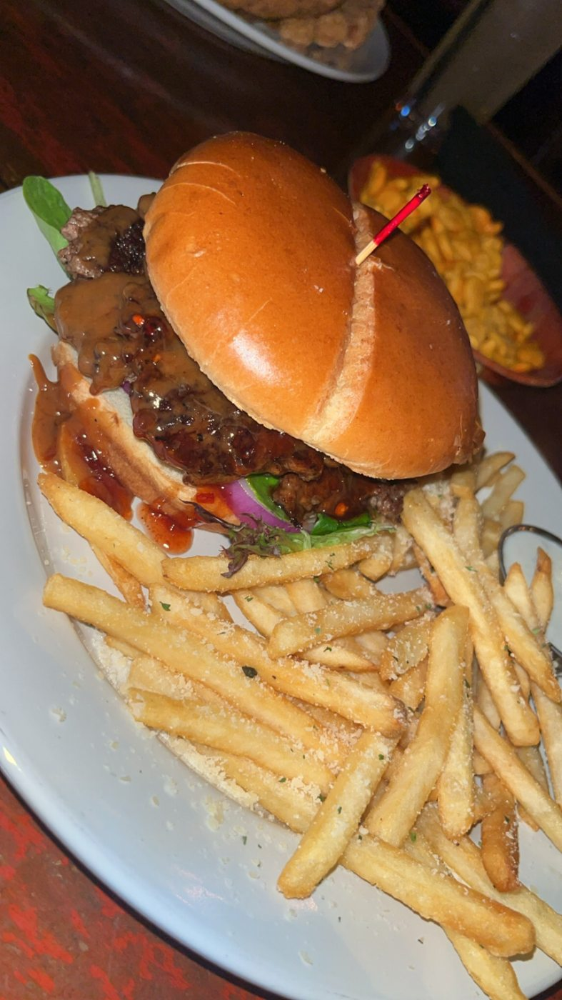
Angry GoldfishFood · 🔁 Visited last year＋
Hours to confirm
A laid-back neighborhood bar and restaurant serving creative burgers, sandwiches, and pub food, including its signature Angry Goldfish sandwich.
🎬 TikTok can be added later
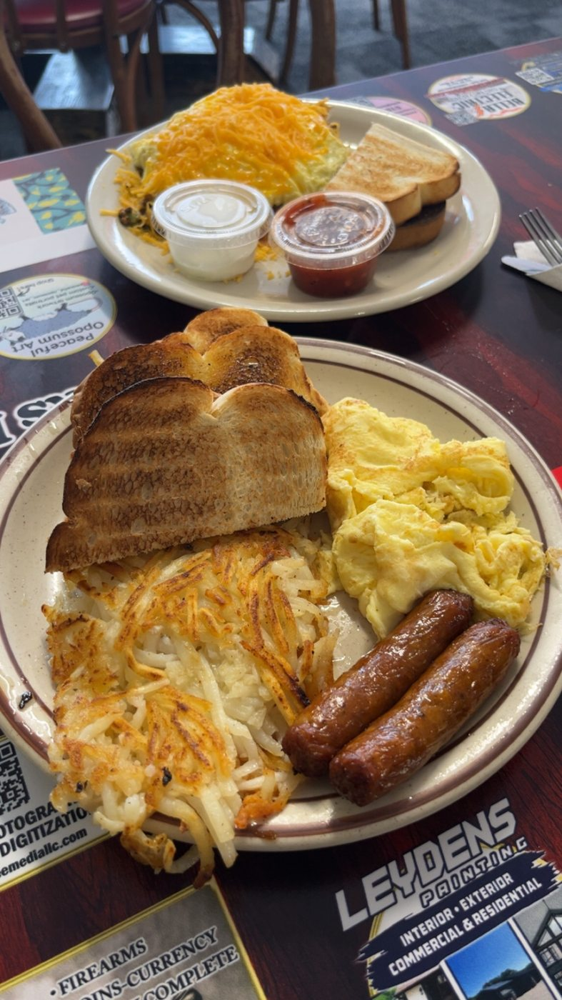
Waveland CafeFood · 🔁 Visited last year＋
Hours to confirm
A beloved old-school breakfast diner known for hearty portions, classic comfort food, and its famous hash browns.
🎬 TikTok can be added later
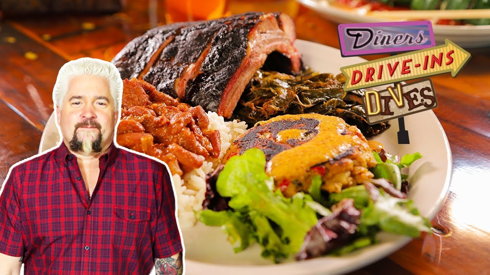
The Flying MangoFood · ✨ New idea＋
Hours and event dates to confirm
A neighborhood favorite combining barbecue, Caribbean flavors, and Southern-inspired cooking.
Halloween Bars
Nightmare on IngersollHalloween Bars · 🔁 Visited last year＋
🕒 Mon–Thu 4–11 · Fri–Sat 11–midnight · Sun 11–10
The Station on Ingersoll gets a spooky makeover with Halloween decorations, themed cocktails, and plenty of photo opportunities.
Use a photo you own or have permission to use. Photos stay in this browser.
Altoona / 04
Attractions
Adventureland / Phantom Fall FestAttractions · 🔁 Visited last year＋
🕒 Fri 6–10 · Sat noon–10 · Sun noon–9
Iowa's amusement park transforms for Phantom Fall Fest, featuring roller coasters, haunted attractions, and Halloween entertainment.
Greater Des Moines / 05
Food
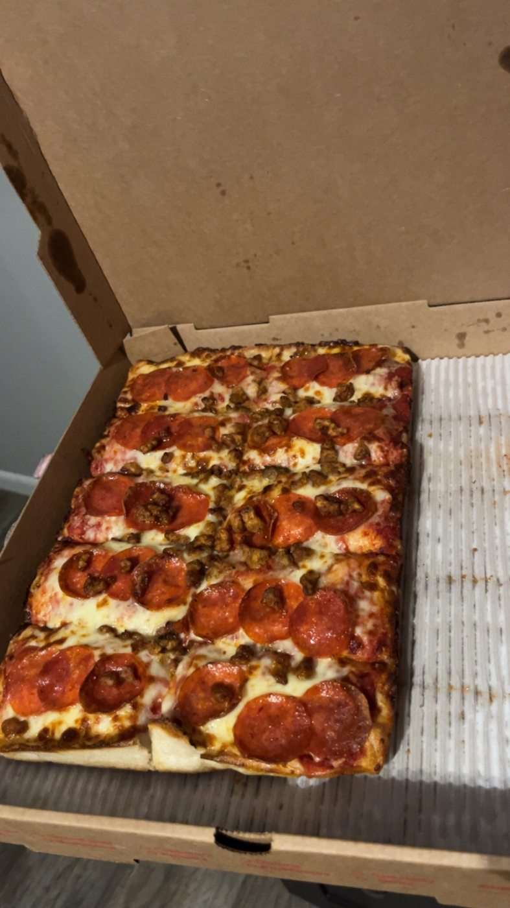
Breadeaux PizzaFood · ✨ New idea＋
🕒 Sun–Thu 4–10 · Fri–Sat 4–11
A regional pizza favorite serving specialty pies, breadsticks, and classic takeout-style pizza.
Select the specific branch before routing.
🎬 TikTok can be added later
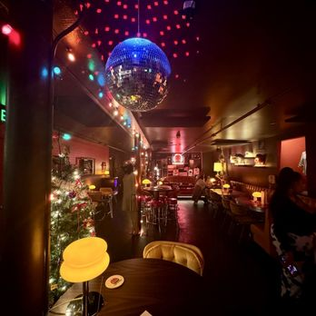
Highland UndergroundFood · ✨ New idea＋
🕒 Tue–Thu 3–10 · Fri 3–midnight · Sat noon–midnight · Sun noon–10 · Mon closed
A retro cocktail and fondue bar tucked beneath a former department store, inspired by the colors and nostalgia of the 1970s.
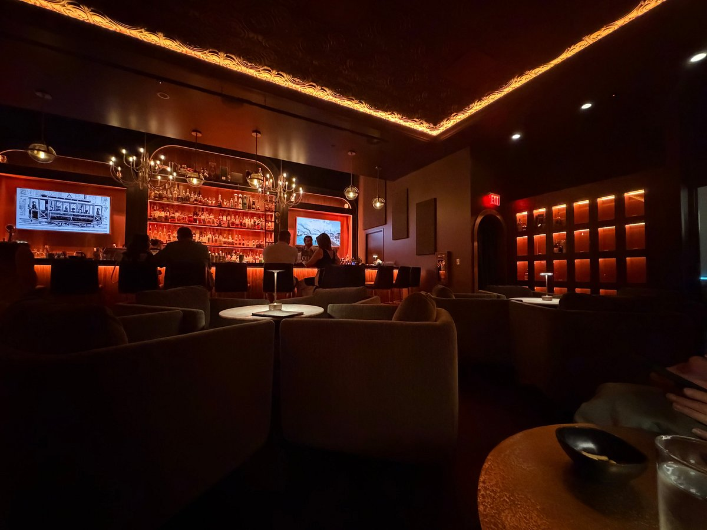
The Atlas RoomFood · ✨ New idea＋
🕒 Hours to confirm
A tucked-away speakeasy-style cocktail lounge inside a West Des Moines salon and spa, with an intimate atmosphere for a night out.
Hugo’s Wood-Fired KitchenFood · ✨ New idea＋
Hours and event dates to confirm
Wood-fired cooking with a focus on pizzas and hearty dishes, a good candidate for a casual dinner.
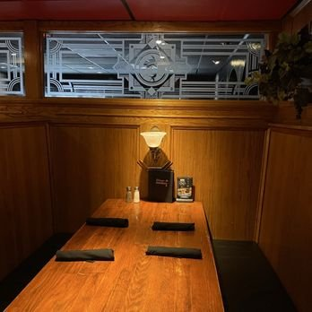
Chicago SpeakeasyFood · ✨ New idea＋
Hours and event dates to confirm
An old-school steakhouse and supper-club-style dinner option, known for its cozy booths and classic atmosphere.
Fall Activities
Center Grove OrchardFall Activities · ✨ New idea＋
Hours to confirm
A sprawling fall destination with pumpkin picking, apple orchards, hayrides, and seasonal activities. A classic Iowa autumn experience.
Cambridge; check late-October apple picking and fall activities.
🎬 TikTok can be added later
Use a photo you own or have permission to use. Photos stay in this browser.
Activities
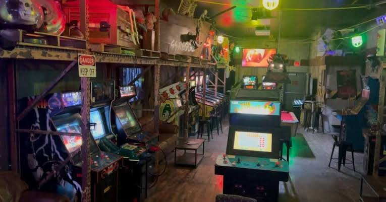
Monsterama PubcadeActivities · ✨ New idea＋
Hours to confirm
A horror-themed arcade bar combining retro video games, pinball, monster memorabilia, and a spooky atmosphere year-round.
Horror-themed arcade; verify hours and location.
🎬 TikTok can be added later
Use a photo you own or have permission to use. Photos stay in this browser.
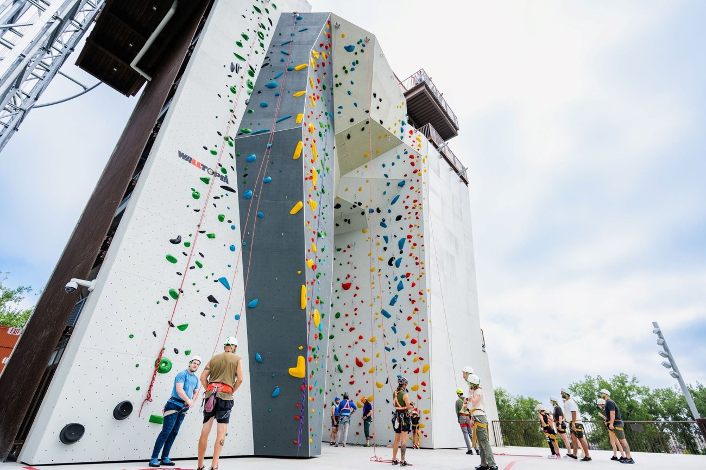
Adventure Tower and Treetop WalkActivities · ✨ New idea＋
Hours and event dates to confirm
A tall climbing wall and elevated treetop-style adventure experience for an active outing. Check availability and weather.
Shopping
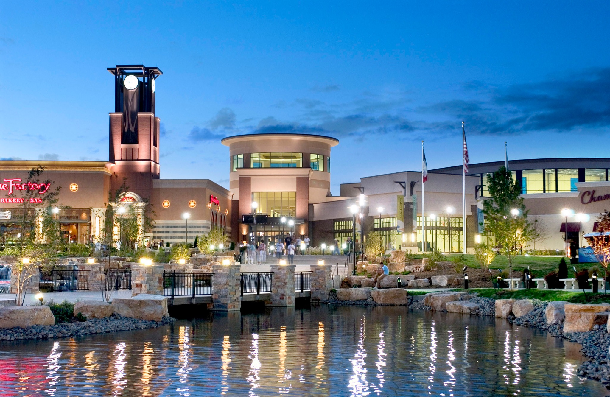
Jordan Creek Town CenterShopping · ✨ New idea＋
🕒 Sun 11–6 · Mon–Thu 10–8 · Fri–Sat 10–9
One of Iowa's largest shopping malls, featuring a wide selection of stores, restaurants, and entertainment options.
🎬 TikTok can be added later
Use a photo you own or have permission to use. Photos stay in this browser.
Halloween
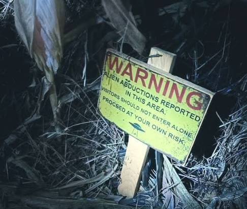
Wilson’s Orchard & Farm — Alien InvasionHalloween · ✨ New idea＋
Hours and event dates to confirm
A seasonal alien-invasion-themed attraction at Wilson’s Orchard & Farm. Check event dates and admission before making the drive.
Beyond the city / 06
Fall Activities
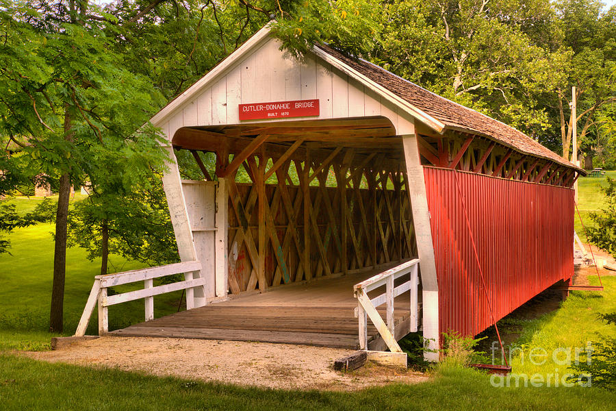
Winterset covered bridgesFall Activities · ✨ New idea＋
Hours to confirm
Explore the historic covered bridges of Madison County, made famous by The Bridges of Madison County. Especially scenic during the fall.
Scenic fall drive around Madison County.
🎬 TikTok can be added later
Use a photo you own or have permission to use. Photos stay in this browser.
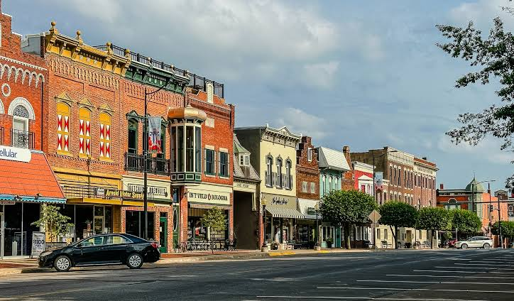
Pella downtown & windmillFall Activities · ✨ New idea＋
Hours to confirm
A charming Dutch-inspired town featuring traditional architecture, local bakeries, and the towering Vermeer Windmill.
Dutch-inspired downtown, bakery and windmill.
🎬 TikTok can be added later
Use a photo you own or have permission to use. Photos stay in this browser.
Attractions
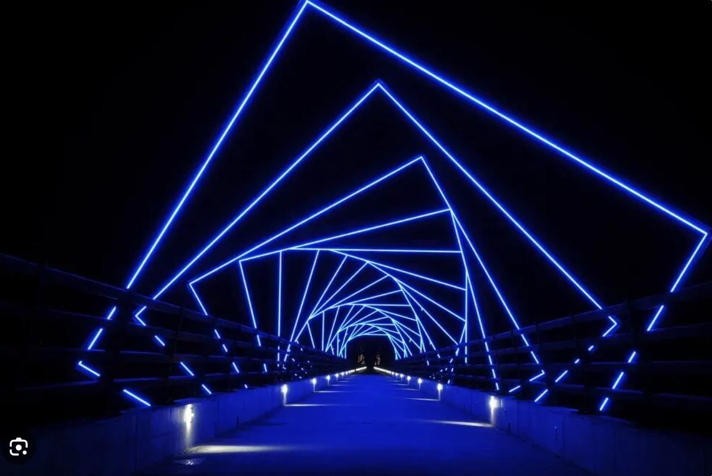
High Trestle Trail BridgeAttractions · ✨ New idea＋
Hours to confirm
A spectacular pedestrian bridge stretching high above the Des Moines River Valley, with illuminated steel frames that create a tunnel-like effect after dark.
Trail walk or bike ride; walking access possible.
🎬 TikTok can be added later
Use a photo you own or have permission to use. Photos stay in this browser.
Boone & Scenic Valley RailroadAttractions · ✨ New idea＋
Hours to confirm
A heritage railroad offering scenic train rides through the Des Moines River Valley, with beautiful views of the surrounding countryside.
Boone, around 50 minutes away; check excursion dates.
🎬 TikTok can be added later
Use a photo you own or have permission to use. Photos stay in this browser.
No places match your search.
The week, loosely planned.
A few tentative plans to build the week around. Dates are penciled in, not confirmed.
Arrival day — open for plans.
Open for plans.
Open for plans.
Adventureland / Phantom Fall Fest
TentativeCenter Grove Orchard
TentativeBOOtanical Garden
TentativeSlaughterhouse
Tentative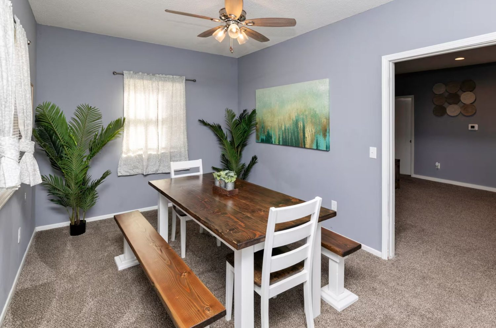
Our home away from home
3 bedrooms · 1 bathroom · full kitchen · free parking
Check-in 4:00 PM · Checkout 10:00 AM
Explore our Airbnb ↗Our Stay.
A cozy home between the frights. Three bedrooms, a full kitchen, and a few minutes from downtown.
Take a look around
All 19 property photos. Tap any photo for a larger view, then swipe or use the arrows to browse.
Sleeping arrangements
Bedroom 1: King bed + smart TV
Bedroom 2: Queen bed + smart TV
Bedroom 3: Full bed + futon + smart TV
Other sleeping options: living-room sofa; guests may bring an air mattress. Host lists maximum occupancy as 10, but not everyone has a dedicated bed.
Check-in & checkout
Check-in: 4:00 PM–2:00 AM
Checkout: 10:00 AM
Smart-lock entry. Host says detailed arrival information will be sent at approximately 11:00 AM Central on check-in day.
For privacy, the exact address and door code are not posted here.
Amenities
Kitchen: Fridge, oven, stove, microwave, toaster, pots, pans, dishes, coffee and tea. No dishwasher.
Laundry: Washer, dryer and detergent.
Comfort: Towels, toiletries, hair dryer, full bathtub/shower, TVs and board games.
Parking: Up to three cars in the driveway, plus free street parking.
House rules
No smoking, parties or events. All guests and visitors must be included on the reservation. Report damage promptly; don't rearrange furniture; take care of furnishings; dispose of trash properly. No illegal substances. The reservation holder must be staying at the property.
Dogs must be registered and paid for in advance. Exterior security cameras record audio and video.
Additional fees & property notes ＋
$15 per guest per night after six guests. $100 pet fee, plus applicable taxes/platform fees. The host says an unregistered pet may incur double the pet fee.
Exterior cameras are located at the front door and west side of the home, monitoring the driveway/backyard area. Do not tamper with cameras.
Host checkout instructions mention a dishwasher, but the property description says there is none; confirm dish instructions with the host.
Our shortlist
Mark a place “Definitely going” or “Visited” inside its card. Your picks will appear below when JavaScript is available. Saved on this device only.
Hours were supplied as planning notes and may change. Verify official dates, hours and tickets before visiting. TikTok videos require internet access.